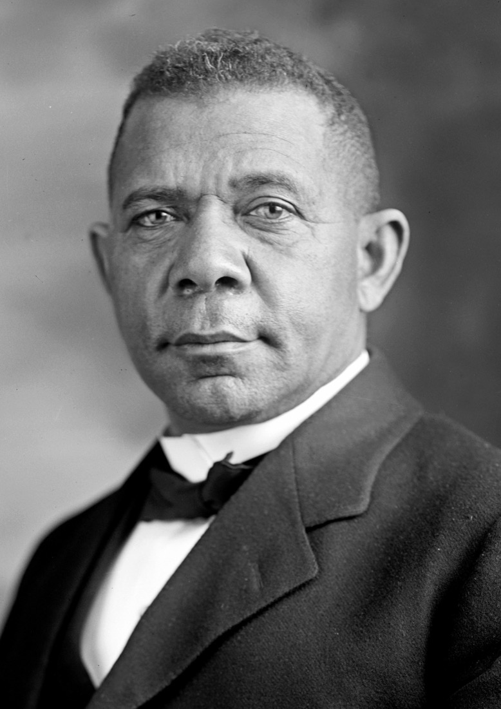
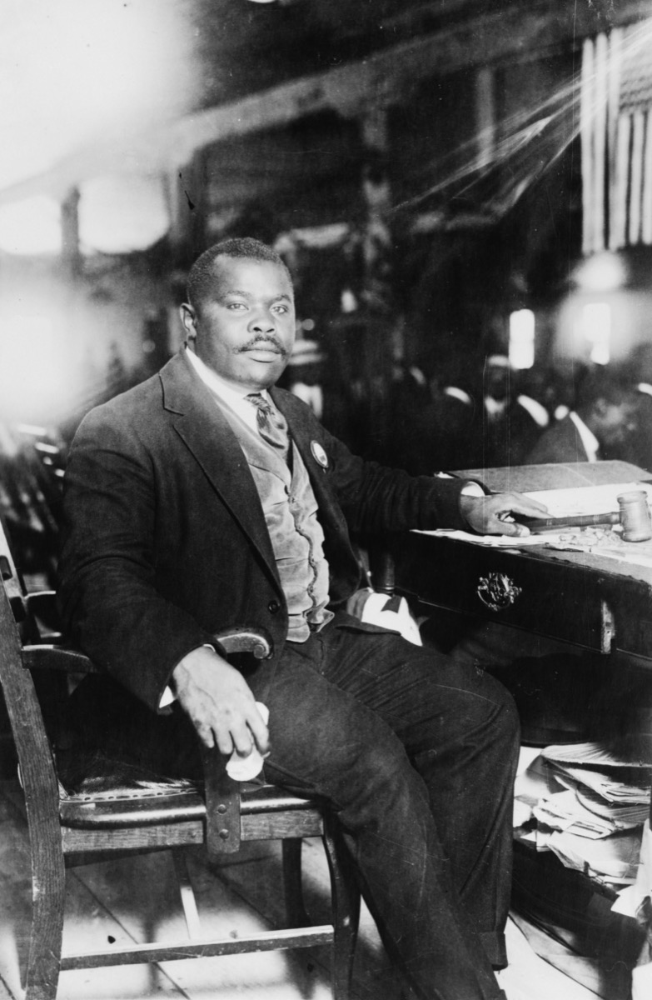
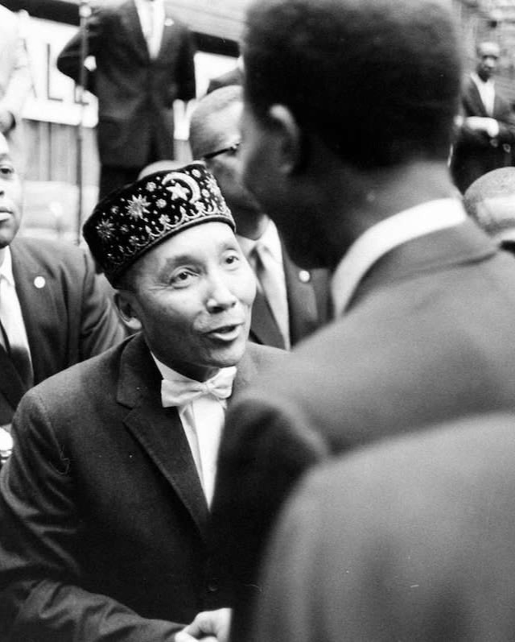

Guide pédagogique
Stratégies d'émancipation : race, pouvoir et institutions aux États-Unis
Glossaire des concepts-clés
Les concepts de l'introduction et des deux premiers cours, définis avec précision et localisés là où ils apparaissent.
Famille de stratégies politiques fondées sur l'autodéfinition, la solidarité de groupe et la construction d'institutions propres, en réponse à une promesse d'égalité jamais tenue. À analyser comme réponse rationnelle à une contrainte — pas comme une posture.
Construction sociale et historique, sans fondement biologique, mais aux effets matériels bien réels. Les sociétés esclavagistes l'ont produite pour justifier des hiérarchies.
Inégalités raciales produites par des institutions et des politiques, sans qu'aucune intention raciste individuelle soit nécessaire. Exemple : le redlining interdit les prêts hypothécaires dans les quartiers noirs sans qu'aucun agent ne soit personnellement raciste.
Concept de W.E.B. Du Bois : se voir simultanément de son propre point de vue et à travers le regard dominant qui vous définit comme inférieur. Effet structurel de la domination — pas une fragilité psychologique.
Citoyenneté accordée dans les textes mais refusée dans les faits. Différée (toujours « en cours »), conditionnelle (suspendue à une bonne conduite définie par les dominants), instrumentalisée (sert à légitimer l'ordre qu'elle prétend transformer).
Cadre (d'après Erving Goffman) qui prend en charge la totalité de l'existence de ses membres — travail, école, normes, discipline. Appliqué à un mouvement, il transforme une promesse de dignité en monde quotidien complet.
Capacité à exercer des fonctions de gouvernement — protection, distribution économique, éducation, production de normes — à l'intérieur d'un État existant, sans territoire propre ni souveraineté juridique.
Chronologie commentée · 1865 – 1959
Les dates essentielles, avec leur signification analytique — pas seulement factuelle.
La boussole : trois manières de produire du pouvoir
La grille centrale de la formation, posée dès l'introduction. Trois réponses à une même question : comment produire du pouvoir réel quand la citoyenneté est conditionnelle ? La suite de la formation les éprouvera, une à une, sur des figures précises.
Hypothèse — l'État libéral est fracturé. On peut le forcer à arbitrer contre ses périphéries racistes en provoquant une crise publique, visible et disciplinée.
Conditions — une cible claire, une violence adverse visible et attribuable, un coût de l'inaction (réputation, géopolitique).
Limite — l'État concède sans se transformer ; la coalition se fragmente dès que l'enjeu devient matériel.
Hypothèse — dans l'arène intérieure, l'État est juge et partie. Il faut changer de tribunal : passer des droits civiques (scène domestique) aux droits humains (scène internationale).
Conditions — une scène internationale réceptive, une capacité à nouer des alliances au-delà des frontières.
Limite — exige une infrastructure pour exister durablement sur cette scène.
Hypothèse — ne rien demander à l'État : exercer directement les fonctions qu'il refuse d'assurer — protection, distribution, éducation, légitimité locale.
Déjà rencontré — la Nation of Islam (Cours 2) en est l'exemple le plus abouti de cette première partie.
Limite — déclenche la réponse répressive la plus intense ; l'infrastructure devient la cible ; la discipline glisse vers la conformité ; le genre reste l'angle mort.
Les quatre limites structurelles
Ces limites ne sont pas des échecs moraux. Ce sont des contraintes inscrites dans la nature même du problème — elles réapparaissent à chaque génération, sous de nouvelles formes.
Un État peut accorder des droits formels tout en laissant intacts les mécanismes de domination dans l'économie, le logement, la police. Chaque concession restaure sa légitimité sans redistribuer ses fonctions. La bonne question : où la décision a-t-elle réellement bougé — dans les discours, ou dans les budgets et les procédures ?
Exemple (C1) — la Reconstruction (1865-1877) : des droits inscrits, puis abandonnés dès que l'intérêt politique a changé.
Les alliances tiennent sur des principes abstraits. Elles se fissurent dès que les revendications touchent aux intérêts matériels des alliés — emplois, budgets, valeur immobilière. La solidarité résiste mieux aux principes qu'aux politiques concrètes.
Exemple (C1) — la coalition de la Reconstruction : le Nord républicain lâche les affranchis quand le compromis de 1877 sert ses intérêts.
Un mouvement d'idées est difficile à démanteler. Un mouvement doté de lieux, de finances, de réseaux et de leaders identifiables peut être infiltré, étranglé, décapité. Plus l'organisation est puissante, plus elle est vulnérable.
Exemples (C1-C2) — la Black Star Line de Garvey ; le réseau d'institutions de la Nation of Islam.
Dans chaque organisation, les femmes portent l'essentiel du travail d'organisation mais sont marginalisées dans les récits et les hiérarchies. Ce biais prive les mouvements d'une partie de leur analyse et nourrit des tensions internes.
Exemple (C2) — Clara Muhammad, fondatrice du réseau scolaire de la Nation of Islam, longtemps effacée des récits.
Figures & organisations clés
Les acteurs rencontrés dans cette première partie. À lire comme des stratèges rationnels dans des contraintes données — pas comme des héros ou des traîtres.

Stratégie de l'élévation graduelle par le travail et l'économie. Le « compromis d'Atlanta » : accepter la séparation pour gagner du temps et des moyens.

Sociologue, cofondateur de la NAACP. Théoricien de la double conscience et de l'intégration critique. Parie sur la réforme de l'intérieur.
Journaliste d'enquête. Démontre, chiffres à l'appui, que le lynchage n'est pas une passion incontrôlable mais un instrument de régulation économique et politique.

Fondateur de l'UNIA, plus grand mouvement noir de masse de l'histoire américaine. La Black Star Line comme projet d'économie autonome. Parie sur l'autonomie, pas sur la réforme.

Chef de la Nation of Islam de 1934 à 1975. Architecte de la contre-société : discipline, institutions, économie propre, journal.
Fonde dès 1934 les premières écoles autonomes noires à Detroit — à l'origine du réseau Sister Clara Muhammad Schools. Pilier effacé de la contre-société.
Vérifiez votre compréhension
3 questions de vérification + 1 question ouverte par cours. Répondez sans relire, puis vérifiez. La bonne réponse est souvent la plus contre-intuitive.
En vous appuyant sur le cours, expliquez pourquoi la citoyenneté afro-américaine après 1865 est qualifiée de « conditionnelle ». Donnez deux exemples concrets (un au Sud, un au Nord).
- Citoyenneté conditionnelle = accordée formellement, refusée structurellement ; suspendue à une « bonne conduite » définie par les dominants.
- Sud : tests d'alphabétisation arbitraires — l'électorat noir du Mississippi chute de 190 000 à 8 600 en deux ans.
- Nord : le redlining — l'État fédéral refuse d'assurer les prêts dans les quartiers noirs, bloquant l'accès à la propriété.
- Le point-clé : l'égalité formelle peut coexister avec l'inégalité structurelle — et servir à la légitimer.
Expliquez le « dilemme fondamental » de la Nation of Islam : comment le mécanisme même qui produit sa puissance produit aussi ses contradictions ?
- La discipline produit coordination et image collective — mais glisse vers la conformité quand la critique devient déviance.
- La séparation produit une communauté forte — au prix d'une influence nationale très limitée.
- L'infrastructure (mosquées, entreprises, journal) rend l'organisation puissante — et précisément vulnérable.
- Le sacré légitime la discipline — et peut se retourner en cage quand quelqu'un conteste la gouvernance.